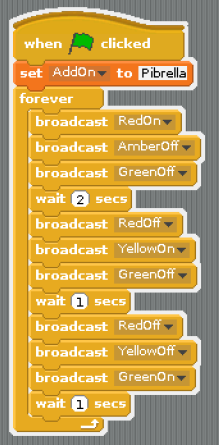
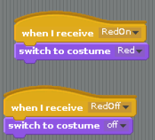
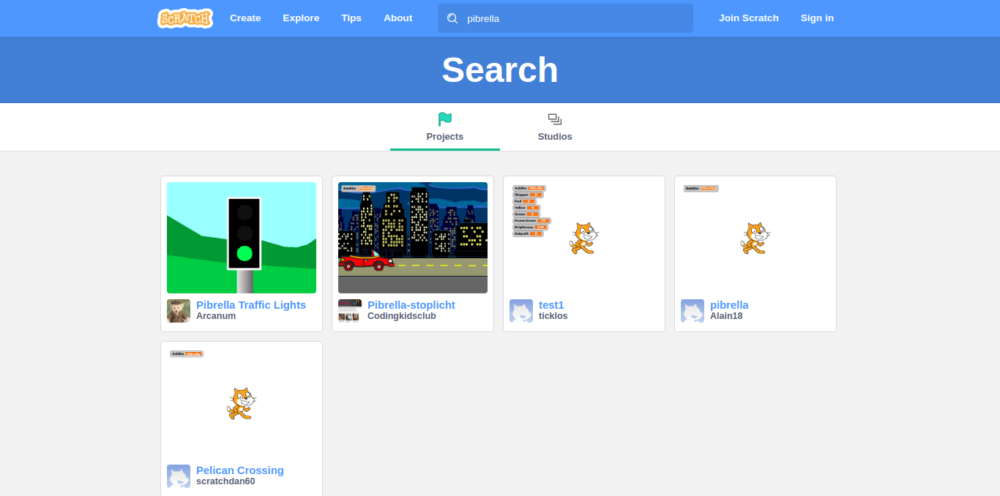
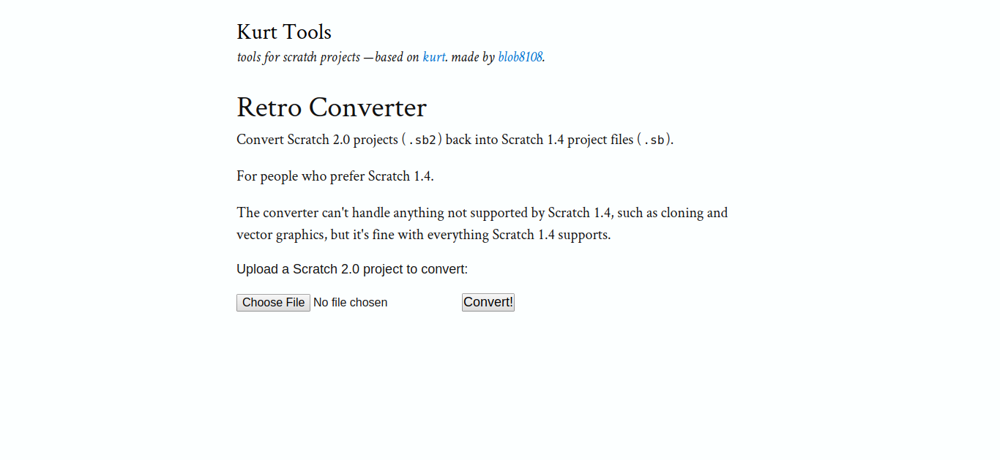

Semáforo
Un semáforo interactuando con otro virtual en Scratch:
¿Te atreves?
El escenario del fondo tiene el siguiente programa: 
Y cada luz tiene dos disfraces, uno encendido y otro todo negro y sus programas muestran uno de los dos disfraces según el mensaje enviado por el anterior programa:

El archivo lo tienes en https://github.com/JavierQuintana/pibrella
Soy un vago
Bueno, quizás nos hemos pasado con este titular, era sólo para llamar la atención, quizás el mejor título es "¡Vamos a reutilizar código!:
Si entramos en la página oficial de Scratch vemos que hay pocos proyectos realizados con Pibrella, y encontramos este ejemplo del semáforo (por cierto mucho más complejo que el explicado anteriormente):

Si nos descargamos uno de ellos, NO NOS VA A FUNCIONAR EN LA RASPBERRY CON PIBRELLA PUES ESTÁN REALIZADOS CON SCRATCH 2.0
Para ello necesitamos alguna herramienta que convierta proyectos Scratch 2.x a 1.x una de ellas puede ser esta: http://kurt.herokuapp.com/20to14

Nota la conversión o es perfecta, sobre todo en la ubicación de los Sprites en el escenario, los mueve de su situación.